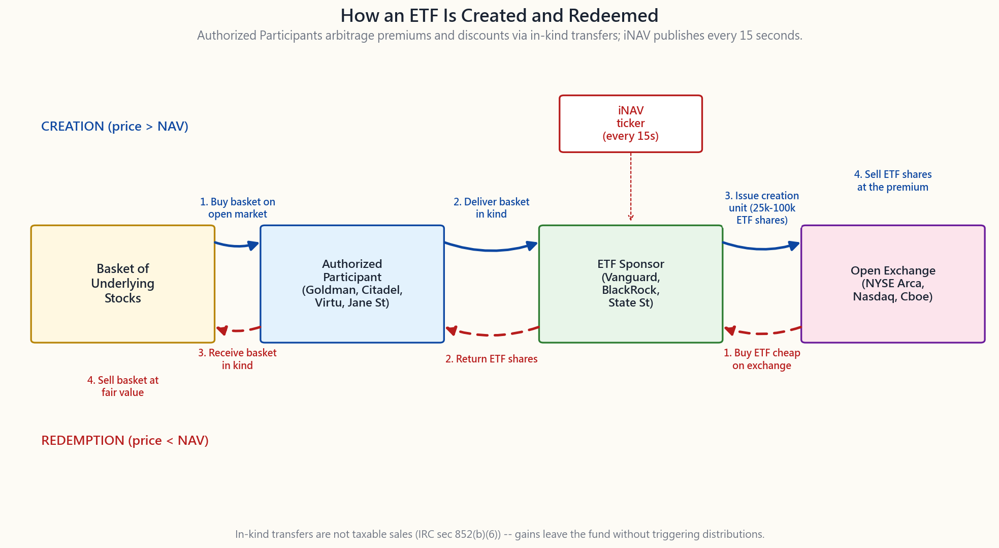
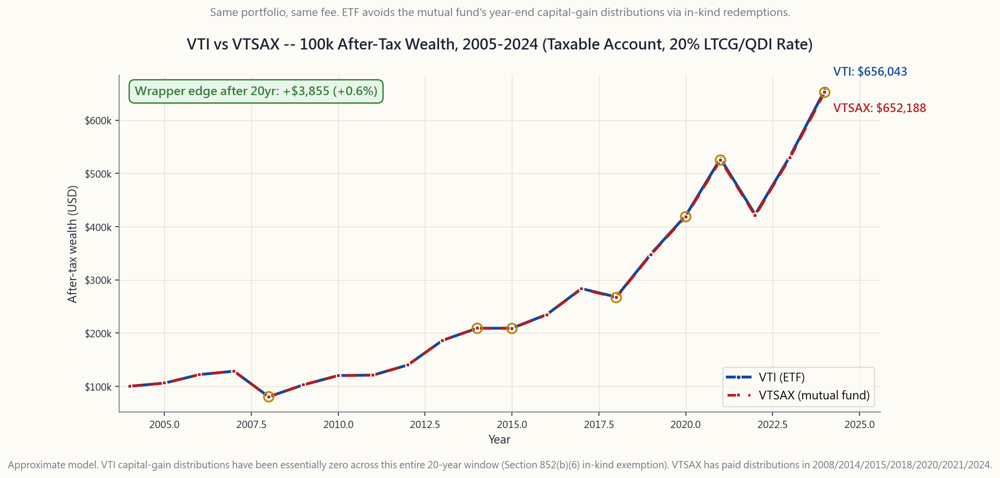

Side Lesson 03: ETF Mechanics — Creation, Redemption, and the Tax-Efficiency Magic Trick
1. Why This Is Important
If you are following Horace's program at all faithfully, the single biggest position in your portfolio is an ETF — probably VTI, SPY, or QQQ. The reasoning is blunt: alpha is rare, the default is passive, and the cleanest way to own the US market is one of three ETFs that can be bought commission-free anywhere. So it is worth ten minutes of your life to understand the plumbing.
There are four reasons the plumbing matters:
not.* Two products that hold the same* portfolio at the same fee — VTI and VTSAX, both 100% Vanguard Total Stock Market — can produce wildly different after-tax returns in a taxable account because of one structural difference: in-kind versus cash redemptions. Once you see the mechanism you know which sleeve belongs in the brokerage account and which in the IRA.
prints on screen at -4% to its NAV during a panic, it is not "broken." It is doing exactly what its design says. Knowing that prevents the worst kind of forced sell.
discounts** while ETFs do not. Same wrapper category, very different mechanics. Recognising the distinction keeps you from buying a CEF at NAV and a year later discovering it is "supposed to" trade at -10%.
stress event bond ETFs passed even though the headline "ETF trading at a 5% discount" looked alarming. The headline was actually the ETF doing price discovery on a frozen underlying market. Understanding that puts you on the right side of the regulator's post-mortem.
This is one side lesson where the plumbing actually changes how you size positions. Worth the ten minutes.
2. What You Need to Know
2.1 Authorized Participants and the Creation/Redemption Cycle
An ETF is not a single thing. It is two markets stitched together.
The secondary market is what you see — Robinhood, Schwab, IBKR. You buy 100 shares of VTI from another investor through a public exchange. Cash for shares, exactly like a stock. The ETF issuer (Vanguard, BlackRock, State Street) is not involved in that trade.
The primary market is hidden from retail. A small group of large broker-dealers — Goldman, Morgan Stanley, Citadel Securities, Virtu, Jane Street, Flow Traders, Susquehanna — sign agreements with the ETF sponsor that make them **Authorized Participants (APs)**. There are usually 20-50 APs per ETF; in practice three or four do most of the volume on any given day.
The cycle works like this. The sponsor publishes a **creation basket** every morning before the open: the exact list of stocks (and weights) that one creation unit of the ETF holds. A creation unit is typically 25,000 to 100,000 ETF shares — call it $3-10 million of NAV.
When the ETF trades at a premium to NAV, an AP:
The premium is the AP's profit. New supply hits the market, the premium compresses, and price re-aligns with NAV.
When the ETF trades at a discount, the cycle reverses:
The discount is the AP's profit. ETF shares get retired, supply shrinks, price re-aligns with NAV.
This whole loop is automated, runs all day, and is invisible to you. The only direct evidence of it you ever see is the iNAV (intraday indicative value) that the exchange publishes every 15 seconds — a continuously-updated estimate of the basket value, against which the current bid/ask is checked. When iNAV and price diverge by more than a few basis points, an AP shows up.

2.2 Why ETFs Are Tax-Efficient (the In-Kind Trick)
Every fund that holds appreciated securities — mutual fund, ETF, hedge fund — has the same problem: when an investor wants out, the fund must somehow free up cash. If the fund sells appreciated stock to pay the redeemer, it realises a capital gain that is taxed at the fund level and the fund is required by law to distribute that gain to all remaining shareholders by year end. Loyal long-term holders pay tax on gains they did not ask the fund to realise. This is the core flaw of the open-end mutual fund structure.
ETFs sidestep this through the in-kind primary-market mechanism. When an AP redeems ETF shares for the underlying basket, the sponsor selects which specific tax lots of the underlying stocks to hand over — and naturally hands over the lots with the lowest cost basis (largest embedded gains). Those gains leave the fund permanently in a non-taxable in-kind transfer. Section 852(b)(6) of the Internal Revenue Code blesses this: an in-kind redemption is not a sale and triggers no fund-level capital gain.
The result is real, though for index mutual funds it is moderate rather than dramatic. Vanguard's VTSAX (mutual fund) and VTI (ETF) hold *the same portfolio at the same expense ratio* -- 0.04% on the institutional side. VTSAX has distributed long-term capital gains in years like 2014, 2015, 2018, 2020, and 2024 (each in the range of 0.1% to 0.7% of NAV); VTI has distributed essentially zero capital gains in its entire history. Over a 20-year hold in a taxable account at a 20% combined LTCG rate, the after-tax wealth difference is on the order of half a percent of terminal value -- a few thousand dollars on a 100k starting balance. For a typical active mutual fund pushing 5-10% of NAV in distributions during a turnover-heavy year, the same calculation produces tens of thousands of dollars of drag.

This is also why Vanguard's patented dual-share structure — VTI is literally a share class of VTSAX, sharing the same portfolio manager and the same trades — gave them an unusual edge for two decades. The patent expired in 2023. Other issuers are now launching ETF share classes of existing mutual funds, which is one of the more important structural shifts in the fund industry that nobody outside fund operations is paying attention to.
2.3 Premium/Discount, iNAV, and the March 2020 Bond ETF Dislocation
The arbitrage loop is fast for liquid US-equity ETFs. SPY, VTI, QQQ, IVV trade within 2 basis points of NAV essentially all day. You will never see a meaningful premium or discount on a megacap US-equity ETF in normal conditions.
Where it gets interesting is in less-liquid underlyings: high-yield bonds, emerging-market debt, municipal bonds, MLPs. When the underlying market is itself thin or temporarily frozen, the ETF price leads the underlying — the ETF trades continuously on the exchange, the underlying does not. The "discount" you see is often not a dislocation; it is the ETF price-discovering what the bonds are actually worth, ahead of the stale dealer marks that drive the published NAV.
That is exactly what happened in March 2020. On 12-13 March 2020, LQD (investment-grade bond ETF) printed at a 5% discount to its published NAV; HYG (high-yield) at 6%; MUB (munis) at 8%. The bond market itself had seized up: bid/ask spreads on individual investment-grade bonds blew out from a normal 5 cents to over a dollar, and many bonds simply did not trade. The ETFs did trade — and the price they printed turned out, in the post-mortem, to be a much better estimate of fair value than the official NAVs. When the Fed announced the corporate-bond facility on 23 March, the discounts closed and ETF prices led the recovery.
The SEC's 2020 Rule 6c-11 review concluded that ETFs functioned as designed and that the price-discovery role they played was useful during the dislocation. This is now the consensus regulatory view. Understanding it is useful because the next time a bond ETF prints at a -4% discount during a panic, you will recognise it for what it is — a feature, not a bug — and not panic-sell into the bid.
2.4 ETFs vs Closed-End Funds, and the New Fee Reality
The contrast with closed-end funds (CEFs) is sharp. A CEF issues a fixed number of shares once in an IPO and then those shares trade on an exchange like a stock — but with **no creation/redemption mechanism**. There is no AP. If the market price drifts away from NAV, no arbitrageur can pull it back. CEFs typically trade at -5% to -15% discounts to NAV persistently — often for years. Same wrapper category, completely different animal.
For most of the post-2000 era there was a real expense-ratio gap between ETFs and mutual funds — ETFs at 5-10 bps, comparable index mutual funds at 50-100 bps. That gap has largely closed for flagship index products. Today VTI and VTSAX are both 0.04%; IVV and VFIAX are 0.03% / 0.04%; BND and VBTLX are 0.03% / 0.05%. Where the gap remains huge is in active management: active mutual funds still average around 0.65% net of waivers; the median actively-managed ETF charges 0.35%. Active mutual funds still get fed retail-channel kickbacks (12b-1 fees, soft-dollar revenue-sharing) that the ETF wrapper structurally cannot pay.
The practical takeaway: for index exposure, the wrapper choice between ETF and mutual fund is now a tax-account-location question, not a fee question. VTI in the taxable brokerage account (in-kind tax shelter), VTSAX in the IRA (no tax to shelter, and the mutual fund auto-reinvests distributions to the penny).
3. Common Misconceptions
Misconception 1: "ETFs are tax-free." ETFs are not tax-free. Dividends are taxed (qualified or ordinary, same rules as stocks). Capital gains when you sell are taxed. What ETFs avoid is the fund-level capital-gain distribution that mutual funds dump on you in December. You control when the gain is realised, by choosing when to sell.
Misconception 2: "An ETF trading at a discount is broken." For liquid US-equity ETFs, even a 30 bp discount is unusual and means an AP is asleep. For less-liquid bond or emerging-market ETFs, a -2% to -5% discount during a stress event is normal and reflects the ETF leading the underlying in price discovery.
Misconception 3: "iNAV is the ETF's true price." iNAV is a model price computed every 15 seconds from the last prints of the underlying stocks. For a US-equity ETF holding liquid stocks during US trading hours, iNAV is reliable. For international-equity or bond ETFs whose underlying markets are closed, iNAV becomes stale and the traded ETF price is the better estimate of fair value.
Misconception 4: "Synthetic ETFs are the same as US ETFs." European synthetic ETFs use total-return swaps with a counterparty bank rather than holding the underlying physically. They have counterparty risk that physical ETFs do not. US-listed ETFs are physically backed by law (1940 Act). Stay in US-listed wrappers.
**Misconception 5: "Leveraged and inverse ETFs are just like regular ETFs but levered."** Leveraged ETFs use daily-rebalanced derivatives and suffer volatility decay — the multi-day return is not 2x or -1x the multi-day return of the underlying. SSO has under-performed frictionless 2x by several percentage points per year over long horizons (Week 37). Short-term tactical, not long-term hold.
**Misconception 6: "Vanguard mutual funds and ETFs are two different products."** For VTI/VTSAX and several other flagships, they are actually the same fund with two share classes — same portfolio, same manager, same trades. Until 2023 this was Vanguard-patented; now it is being copied across the industry.
**Misconception 7: "ETFs that track illiquid assets are doomed in a crisis."** The March 2020 stress test produced the opposite conclusion. Bond ETFs functioned as price-discovery mechanisms when the underlying markets froze. The ETF wrapper held up better than the underlying markets.
**Misconception 8: "Closed-end funds and ETFs are basically the same."** Same exchange-traded wrapper, completely different mechanism. ETFs have AP-driven creation/redemption that pins price to NAV. CEFs do not, and their prices drift to persistent -5% to -15% discounts. The acronym is similar; the product is not.
4. Q&A
**Q1: How do I check the premium/discount of an ETF before I trade?**
A: Every issuer publishes an end-of-day premium/discount on its
fund page. For intraday checks, the exchange publishes iNAV
under the symbol VTI.IV) on most data
feeds. For US-equity ETFs you can usually skip this — premiums
and discounts are below the bid/ask spread. For bond and
international ETFs, checking before a large trade is worth
thirty seconds.
Q2: Should I prefer market orders or limit orders on ETFs?
A: Limit orders, always, especially in the first 15 minutes after open and the last 15 minutes before close when iNAV can lag. For liquid US ETFs, place a limit at the displayed bid (selling) or ask (buying) and you will fill within seconds at NAV. Avoid market orders during fast tape — slippage on a thin mid-cap-sector ETF can be 10-20 bps.
**Q3: Why does VTI rarely distribute capital gains while VTSAX sometimes does?**
A: Same portfolio, but VTSAX has cash-redemption flow (an investor selling triggers the fund to sell stocks to raise cash, realising gains), while VTI has in-kind redemption flow (the AP takes the stocks, no sale, no gain realised inside the fund). When VTSAX sees outflows in a year of high embedded gains, the year-end distribution can be material. VTI almost never has this problem.
Q4: If VTI is more tax-efficient, why hold VTSAX at all?
A: Two reasons. VTSAX auto-reinvests dividends and distributions to the penny with no fractional-share friction — useful in a 401(k) or IRA where tax efficiency does not matter and you want the cleanest accounting. VTSAX also accepts dollar amounts ("invest 500"), VTI accepts share amounts ("buy 4 shares"); for automated regular contributions the dollar-amount interface of the mutual fund is simpler. The tax rule still says: in a taxable brokerage account, default to the ETF.
Q5: What are creation units and why are they so large?
A: A creation unit is the minimum block size at which an AP can interact with the ETF sponsor — typically 25,000 to 100,000 ETF shares (3-10 million of NAV). The size keeps operational and custody costs of physical creation/redemption manageable. APs break those blocks down into the much smaller lots retail investors trade.
Q6: Can the ETF mechanism break? What would that look like?
A: It can break in two ways. (1) APs go on strike — refuse to arb because they think they cannot exit the underlying. This is what regulators worry about for thin underlyings. (2) The underlying market itself ceases to function — March 2020 was a near miss. In both cases the ETF is doing what it should: showing the world that the underlying is priced incorrectly. The fix is to fix the underlying market, not to ban the ETF.
Q7: What is a "synthetic" ETF and should I care?
A: A synthetic ETF (mostly European) holds a swap contract with a bank counterparty that promises to pay the index return, rather than holding the underlying stocks. It introduces counterparty risk. The default is US-listed ETFs only — that constraint automatically rules out synthetic ETFs.
Q8: Why do some ETFs charge 0.03% and others 0.95%?
A: Index ETFs that track a broad, well-licensed benchmark have license fees of essentially zero and operate at scale, so 0.03% is achievable. Active ETFs, thematic ETFs, single-country emerging-market ETFs, leveraged ETFs, and currency-hedged ETFs all carry higher fees because of licensing, hedging, or active management costs. The rule still holds: alpha is rare, and the cheap ones almost always win after 10 years.
Q9: What is the "ETF tax-loss harvesting partner" trick?
A: To realise a tax loss while staying invested, you sell one fund and buy a "substantially-similar-but-not-identical" fund. ITOT and VTI both track total-US-stock-market indices but are different funds (one BlackRock, one Vanguard, slightly different indices), so swapping them is not a wash sale. Side Lesson 4 covers this in detail.
**Q10: What is the most important thing to remember from this lesson?**
A: Two things. In a taxable account, prefer the ETF wrapper to the equivalent mutual fund — the in-kind redemption mechanism gives you a structural after-tax edge that compounds over decades. And when an ETF prints at a discount during stress, ask whether the underlying market is itself functioning before you conclude the ETF is broken — almost always the ETF is right and the NAV is stale.
附加課程 03：交易所買賣基金的運作機制——創設、贖回，以及稅務效益的魔法
1. 為何此課題至關重要
如果你有認真跟隨陳馬的課程，你投資組合中最大的單一持倉很可能是一隻交易所買賣基金——大概是 VTI、SPY 或 QQQ。原因直接明瞭：阿爾法難求，被動管理才是預設選擇，而持有美國市場最簡潔的方式，就是三隻可免佣金買入的交易所買賣基金之一。因此，花十分鐘了解其內部運作機制是值得的。
了解這些機制有四個原因：
這是一堂內部機制實際影響你倉位規模的附加課程，值得花十分鐘細讀。
2. 你需要掌握的知識
2.1 授權參與者與創設／贖回循環
交易所買賣基金並非單一事物，而是兩個市場縫合而成的產物。
二級市場是你所見的部分——Robinhood、Schwab、IBKR。你透過公開交易所從另一位投資者手中買入 100 股 VTI，以現金換取股份，與買賣股票一模一樣。交易所買賣基金的發行商（Vanguard、BlackRock、State Street）不參與這筆交易。
一級市場則隱藏於散戶視野之外。一小群大型經紀商——Goldman、Morgan Stanley、Citadel Securities、Virtu、Jane Street、Flow Traders、Susquehanna——與交易所買賣基金保薦人簽署協議，成為授權參與者（AP）。每隻交易所買賣基金通常有 20 至 50 個授權參與者；但實際上，任何特定交易日大部分成交量都集中在三至四個授權參與者手上。
循環運作如下。保薦人每天開市前公布一份創設籃子：即一個創設單位的交易所買賣基金所持有的確切股票清單（及權重）。一個創設單位通常為 25,000 至 100,000 股交易所買賣基金——相當於約 300 萬至 1,000 萬港元的資產淨值。
當交易所買賣基金以高於資產淨值的溢價交易時，授權參與者會：
溢價即為授權參與者的利潤。新供應進入市場，溢價收窄，價格重新與資產淨值對齊。
當交易所買賣基金以折讓交易時，循環反轉：
折讓即為授權參與者的利潤。交易所買賣基金股份被註銷，供應減少，價格重新與資產淨值對齊。
整個循環全程自動化，全天運行，你完全看不見。你所能直接看到的唯一證據，是交易所每 15 秒公布一次的iNAV（盤中指示價值）——這是對籃子價值的持續更新估算，當前買盤價與賣盤價均以此作參考。當 iNAV 與價格相差超過幾個基點時，授權參與者便會出現。
2.2 為何交易所買賣基金具有稅務效益（實物交換的技巧）
每隻持有已升值證券的基金——互惠基金、交易所買賣基金、對沖基金——都面臨同一問題：當投資者要求贖回時，基金必須以某種方式籌集現金。若基金出售已升值的股票來支付贖回款項，便會在基金層面實現資本增值，而且依法須在年底將這部分資本增值分配給所有留存股東。忠誠的長線持有人為他們從未要求基金實現的增值繳納稅款。這是開放式互惠基金結構的核心缺陷。
交易所買賣基金透過一級市場的實物交換機制繞過了這一問題。當授權參與者以底層籃子贖回交易所買賣基金股份時，保薦人可選擇交出哪些特定的稅務批次的底層股票——自然會選出成本基礎最低（即嵌入增值最大）的批次。這些增值以不觸發應課稅事項的實物轉讓方式永久離開基金。美國《國內稅收法典》第 852(b)(6) 條對此予以認可：實物贖回不屬於出售行為，不會在基金層面引發資本增值。
實際效果是真實的，儘管對於指數型互惠基金而言，效果較為溫和而非戲劇性。Vanguard 的 VTSAX（互惠基金）和 VTI（交易所買賣基金）持有相同的投資組合，收取相同的開支比率——機構端均為 0.04%。VTSAX 曾於 2014、2015、2018、2020 及 2024 年分派長線資本增值（每次佔資產淨值的 0.1% 至 0.7%）；VTI 在其整個歷史中幾乎從未分派資本增值。以 20 年持有期、20% 綜合長線資本增值稅率計算，兩者的稅後財富差異約為終值的半個百分點——以 10 萬元起始本金計，相差數千元。對於一隻在高換手率年份分派 5%-10% 資產淨值的典型主動型互惠基金，同樣的計算會產生數萬元的拖累。
這也是 Vanguard 專利雙重股份結構的由來——VTI 實際上是 VTSAX 的一個股份類別，共用同一名基金經理和同一套交易——讓他們在過去二十年享有獨特優勢。該專利已於 2023 年到期。其他發行商現正推出現有互惠基金的交易所買賣基金股份類別，這是基金行業其中一項最重要的結構性轉變，但基金運營圈子以外幾乎無人關注。
2.3 溢價／折讓、iNAV 與 2020 年 3 月債券交易所買賣基金的價格錯位
對於流動性充裕的美股交易所買賣基金，套利循環快速運作。SPY、VTI、QQQ、IVV 幾乎全天在資產淨值 2 個基點以內交易。在正常情況下，你永遠不會在大型美股交易所買賣基金上看到有意義的溢價或折讓。
有趣的情況出現在底層資產流動性較差的品種：高收益債券、新興市場債務、市政債券、主有限合夥企業（MLP）。當底層市場本身流動性不足或暫時凍結時，交易所買賣基金的價格會領先底層資產——交易所買賣基金在交易所持續交易，而底層資產卻未必。你所看到的「折讓」往往並非錯位，而是交易所買賣基金正在對債券的實際價值進行價格發現，領先於驅動已公布資產淨值的陳舊做市商報價。
這正是 2020 年 3 月所發生的情況。2020 年 3 月 12 至 13 日，LQD（投資級債券交易所買賣基金）以低於其公布資產淨值 5% 的價格成交；HYG（高收益）折讓 6%；MUB（市政債券）折讓 8%。債券市場本身已告停頓：個別投資級債券的買賣差價從正常的 5 美分擴闊至逾 1 美元，許多債券更是完全停止交易。交易所買賣基金繼續交易——而其最終成交價格，在事後評估中被證明遠比官方資產淨值更接近公允價值。當聯儲局於 3 月 23 日宣布公司債券購買計劃後，折讓收窄，交易所買賣基金領先復甦。
美國證券交易委員會 2020 年《6c-11 條規則》的檢討報告結論，交易所買賣基金按設計正常運作，其在價格錯位期間所扮演的價格發現角色是有益的。這目前已是監管機構的共識立場。了解這一點至關重要，因為下次債券交易所買賣基金在恐慌期間以 -4% 折讓成交時，你將認識到這是一項特性而非缺陷，不至於恐慌性賣出。
2.4 交易所買賣基金與封閉式基金，以及當前費用現實
與封閉式基金（CEF）的對比十分鮮明。封閉式基金在首次公開招股時發行固定數量的股份，此後這些股份在交易所像股票一樣交易——但沒有創設／贖回機制。沒有授權參與者。若市場價格偏離資產淨值，沒有套利者能將其拉回。封閉式基金通常以低於資產淨值 5% 至 15% 的折讓持續交易——往往長達數年。同屬一個包裝類別，卻是完全不同的動物。
在 2000 年後的大部分時期，交易所買賣基金與互惠基金之間存在真實的開支比率差距——交易所買賣基金約為 5 至 10 個基點，同等指數互惠基金則為 50 至 100 個基點。這一差距在旗艦指數產品方面已基本消除。如今 VTI 和 VTSAX 均為 0.04%；IVV 和 VFIAX 分別為 0.03% / 0.04%；BND 和 VBTLX 分別為 0.03% / 0.05%。差距依然巨大的地方在於主動管理：主動型互惠基金扣除豁免後平均收費仍約為 0.65%；主動管理型交易所買賣基金的中位數則為 0.35%。主動型互惠基金仍享有零售渠道的回佣（12b-1 費用、軟性美元收入分享），而交易所買賣基金的結構在機制上無法支付此類費用。
實際啟示：對於指數敞口，選擇交易所買賣基金還是互惠基金的包裝，現在是一個稅務帳戶配置的問題，而非費用問題。在應稅經紀帳戶持有 VTI（受益於實物交換稅務庇護），在 IRA 持有 VTSAX（無稅務可庇護，且互惠基金可精確自動再投資分派）。
3. 常見誤解
誤解一：「交易所買賣基金免稅。」 交易所買賣基金並非免稅。股息須繳稅（合資格或普通股息，規則與股票相同）。你出售時的資本增值須繳稅。交易所買賣基金所避免的，是互惠基金在 12 月強加於你的基金層面資本增值分派。你掌控何時實現增值——取決於你選擇何時賣出。
誤解二：「以折讓交易的交易所買賣基金已經失靈。」 對於流動性充裕的美股交易所買賣基金，即使 30 個基點的折讓也屬罕見，意味著某位授權參與者沒有在做。對於流動性較差的債券或新興市場交易所買賣基金，在壓力事件期間出現 -2% 至 -5% 的折讓是正常的，反映交易所買賣基金在底層資產的價格發現方面領先於市場。
誤解三：「iNAV 就是交易所買賣基金的真實價格。」 iNAV 是每 15 秒根據底層股票最新成交價計算的模型價格。對於在美國交易時段持有流動性強的股票的美股交易所買賣基金，iNAV 是可靠的。但對於底層市場已收市的國際股票或債券交易所買賣基金，iNAV 會變得陳舊，此時成交的交易所買賣基金價格才是公允價值的更佳估算。
誤解四：「合成交易所買賣基金與美國交易所買賣基金相同。」 歐洲合成交易所買賣基金使用與交易對手銀行簽訂的總回報掉期，而非實物持有底層資產。它們帶有實物交易所買賣基金所沒有的交易對手風險。美國上市的交易所買賣基金依法（《1940 年投資公司法》）須以實物資產支持。請僅持有美國上市的包裝產品。
誤解五：「槓桿及反向交易所買賣基金只是加了槓桿的普通交易所買賣基金。」 槓桿交易所買賣基金使用每日再平衡的衍生工具，並承受波動性損耗——多日累計回報並非底層資產多日回報的 2 倍或 -1 倍。從長期來看，SSO 的表現每年遜於無摩擦的 2 倍回報達數個百分點（第 37 週）。這是短線戰術工具，而非長線持有選擇。
誤解六：「Vanguard 互惠基金和交易所買賣基金是兩種不同產品。」 就 VTI/VTSAX 及其他幾隻旗艦產品而言，它們實際上是同一隻基金的兩個股份類別——相同的投資組合、相同的基金經理、相同的交易。2023 年前，這受 Vanguard 專利保護；現在業界正在跟進複製。
誤解七：「追蹤非流動性資產的交易所買賣基金在危機中注定失敗。」 2020 年 3 月的壓力測試得出了相反結論。當底層市場凍結時，債券交易所買賣基金發揮了價格發現機制的功能。交易所買賣基金包裝的表現優於其底層市場。
誤解八：「封閉式基金和交易所買賣基金基本相同。」 同屬交易所買賣包裝，機制卻截然不同。交易所買賣基金有授權參與者驅動的創設／贖回機制，將價格釘住資產淨值。封閉式基金沒有，其價格持續偏離至 -5% 至 -15% 的折讓。名稱相近，產品迥異。
4. 問答環節
問題一：如何在交易前查看交易所買賣基金的溢價／折讓？
答：每位發行商均在其基金頁面公布每日收市後的溢價／折讓數據。如需盤中查詢，交易所在大多數數據源上以 <代號>.IV（例如 VTI.IV）的符號發布 iNAV。對於美股交易所買賣基金，你通常可以跳過此步驟——溢價和折讓均低於買賣差價。但對於債券和國際股票交易所買賣基金，大額交易前花三十秒查核是值得的。
問題二：交易交易所買賣基金應選擇市價盤還是限價盤？
答：務必選擇限價盤，尤其是在開市後首 15 分鐘及收市前 15 分鐘，因為此時 iNAV 可能滯後。對於流動性充裕的美國交易所買賣基金，以顯示的買盤價（賣出）或賣盤價（買入）下限價盤，通常可在數秒內以接近資產淨值的價格成交。在行情急速波動期間避免使用市價盤——流動性較差的中型股行業交易所買賣基金的滑點可達 10 至 20 個基點。
問題三：為何 VTI 幾乎不分派資本增值，而 VTSAX 有時會？
答：兩者持有相同的投資組合，但 VTSAX 採用現金贖回（投資者賣出時，基金須出售股票籌集現金，在基金內部實現增值），而 VTI 採用實物交換贖回（授權參與者直接取走股票，基金內部無需出售，無需實現增值）。當 VTSAX 在嵌入增值較高的年份面臨資金流出時，年末分派可能相當可觀。VTI 幾乎從未有此問題。
問題四：若 VTI 稅務效益更高，為何還要持有 VTSAX？
答：有兩個原因。VTSAX 可將股息和分派精確自動再投資，無分數股份的摩擦——這在無需稅務庇護且希望保持最簡潔帳目的 401(k) 或 IRA 中非常實用。此外，VTSAX 接受金額輸入（「投入 500 元」），VTI 接受股份數量輸入（「買入 4 股」）；對於自動定期供款，互惠基金的金額輸入介面更為簡便。稅務規則依然清晰：在應稅經紀帳戶中，預設選擇交易所買賣基金。
問題五：創設單位是什麼？為何規模如此之大？
答：創設單位是授權參與者與交易所買賣基金保薦人互動的最小批量——通常為 25,000 至 100,000 股交易所買賣基金（即 300 萬至 1,000 萬資產淨值）。這一規模令實物創設／贖回的運營及托管成本保持在可控範圍內。授權參與者再將這些大批次拆分成散戶投資者交易的更小批次。
問題六：交易所買賣基金的機制會失效嗎？失效時會是什麼情況？
答：有兩種失效方式。（一）授權參與者「罷工」——因擔心無法退出底層資產而拒絕套利。這是監管機構對底層資產稀薄的交易所買賣基金的憂慮所在。（二）底層市場本身停止運作——2020 年 3 月已接近這種情況。在這兩種情況下，交易所買賣基金正在做其應做的事：向市場顯示底層資產定價有誤。解決之道在於修復底層市場，而非禁止交易所買賣基金。
問題七：什麼是「合成」交易所買賣基金？我需要關注嗎？
答：合成交易所買賣基金（主要為歐洲產品）持有與銀行交易對手簽訂的掉期合約，由對方承諾支付指數回報，而非實物持有底層股票。這引入了實物交易所買賣基金所沒有的交易對手風險。預設只持有美國上市的交易所買賣基金——這一原則自然排除了合成交易所買賣基金。
問題八：為何部分交易所買賣基金收費 0.03%，而另一些收費 0.95%？
答：追蹤廣泛、授權費低廉的基準指數的指數型交易所買賣基金，授權費幾乎為零，且可依靠規模效益運營，因此 0.03% 是可以實現的。主動型、主題型、單一國家新興市場、槓桿型及貨幣對沖型交易所買賣基金，因授權、對沖或主動管理成本較高而收取更高費用。規律依然成立：阿爾法難求，便宜的產品在十年後幾乎總是勝出。
問題九：「稅務虧損收割配對基金」的技巧是什麼？
答：為了在保持投資敞口的同時實現稅務虧損，你可以賣出一隻基金，同時買入一隻「大致相似但並不相同」的基金。ITOT 和 VTI 均追蹤美國整體股票市場指數，但屬於不同基金（一為 BlackRock，一為 Vanguard，指數略有差異），因此互換持倉並不構成「洗售」。附加課程 4 將詳細介紹此技巧。
問題十：本課最重要的一點是什麼？
答：兩點。在應稅帳戶中，優先選擇交易所買賣基金包裝，而非同等互惠基金——實物交換贖回機制賦予你結構性的稅後優勢，複利效果可延續數十年。其次，當交易所買賣基金在壓力期間以折讓成交時，應先判斷底層市場是否正常運作，再下結論說交易所買賣基金已失靈——幾乎可以肯定的是，交易所買賣基金是對的，而資產淨值已告陳舊。
補充課 03：指數股票型基金的運作機制——申購、贖回，以及節稅魔法
1. 為什麼這很重要
如果你確實遵循陳馬的學習計畫，你的投資組合中最大的單一部位大概就是一檔指數股票型基金——很可能是 VTI、SPY 或 QQQ。理由很直白：阿爾法難得一見，被動式管理是預設選擇，而掌握美股市場最簡潔的方式，就是三檔可以在任何地方免手續費買到的指數股票型基金。所以值得花你十分鐘，弄清楚它的底層機制。
機制之所以重要，有四個原因：
這是一堂底層機制真正會影響你部位規模的補充課，十分鐘很值得。
2. 你需要知道的事
2.1 授權參與者與申購／贖回循環
一檔指數股票型基金並不是單一市場，而是兩個市場縫合在一起。
次級市場是你看得到的——Robinhood、Schwab、IBKR。你從另一位投資人手中買進 100 股 VTI，在公開交易所以現金換股份，就像買賣股票一樣。基金發行人（Vanguard、貝萊德、道富）不參與這筆交易。
初級市場是零售投資人看不到的。一小群大型券商——高盛、摩根士丹利、Citadel Securities、Virtu、Jane Street、Flow Traders、Susquehanna——與基金發行商簽訂協議，成為授權參與者（AP）。每檔指數股票型基金通常有 20 到 50 個授權參與者，但實際上任何一天的大部分交易量只由其中三到四個主導。
運作流程如下。基金發行商每天在開盤前公布一份申購籃：列出一個申購單位所持有的所有股票及其權重。申購單位通常為 25,000 到 100,000 股指數股票型基金份額——大約等於 300 萬到 1,000 萬美元的淨值。
當指數股票型基金以溢價交易時，授權參與者會：
溢價就是授權參與者的利潤。新供給進入市場，溢價收斂，價格回歸淨值。
當指數股票型基金以折價交易時，循環反向進行：
折價就是授權參與者的利潤。指數股票型基金股份被註銷，供給縮減，價格回歸淨值。
這整個循環是自動化的，全天運行，對你完全不可見。你能直接看到的唯一證據是交易所每 15 秒公布一次的即時估計淨值（iNAV）——持續更新的一籃子股票價值估計，供即時買賣價與其比對。當 iNAV 與市價偏離超過幾個基點，授權參與者就會現身。
2.2 為什麼指數股票型基金節稅效率高（實物交割的魔法）
每一檔持有增值證券的基金——共同基金、指數股票型基金、避險基金——都面臨同樣的問題：當投資人想要出場，基金必須設法籌現金。如果基金賣出增值股票來支付贖回，就會在基金層面實現資本利得，依法必須在年底將該利得分配給所有留存股東。忠誠的長期持有人因此要為他們從未要求基金實現的利得繳稅，這是開放型共同基金結構的核心缺陷。
指數股票型基金透過初級市場的實物交割機制繞過了這個問題。當授權參與者以指數股票型基金股份贖回底層股票時，基金發行商可以選擇要交出哪幾個特定稅務批次的股票——當然會選成本基礎最低（含潛在利得最大）的批次交出去。那些利得就此永遠以免稅的實物移轉方式離開基金。美國《國內稅收法典》第 852(b)(6) 條明文認可此做法：實物贖回不構成出售，不會在基金層面觸發資本利得。
這個效果是真實存在的，不過對於指數型共同基金而言，差距是適中而非戲劇性的。Vanguard 的 VTSAX（共同基金）與 VTI（指數股票型基金）持有相同的投資組合，相同的費用率——機構端均為 0.04%。VTSAX 在 2014、2015、2018、2020 和 2024 年都曾分配長期資本利得（每次約佔淨值的 0.1% 至 0.7%）；VTI 在其整個歷史上分配的資本利得幾乎為零。在應稅帳戶中，以 20% 的綜合長期資本利得稅率持有 20 年，稅後財富的差距約為期末價值的半個百分點——以 10 萬美元起始投資來說，相差幾千美元。但對於一檔典型的主動式管理共同基金，在換手率偏高的年份分配佔淨值 5% 到 10% 的利得，同樣的試算結果會產生數萬美元的拖累。
這也是 Vanguard專利雙重股份結構——VTI 字面上就是 VTSAX 的一個股份級別，共用同一位基金經理和同樣的交易——讓他們在二十年間獨享優勢的原因。該專利已於 2023 年到期。其他發行商現在正陸續推出現有共同基金的指數股票型基金股份級別，這是基金業最重要的結構性轉變之一，但業外幾乎沒有人在關注。
2.3 溢折價、即時估計淨值，以及 2020 年 3 月債券型指數股票型基金的脫鉤事件
對於流動性高的美股指數股票型基金，套利循環極為快速。SPY、VTI、QQQ、IVV 在正常情況下幾乎全天都在淨值 2 個基點以內交易。你不可能在正常情況下看到大型美股指數股票型基金出現有意義的溢折價。
有趣的地方在流動性較差的底層資產：高收益債券、新興市場債、市政債券、MLP。當底層市場本身交易清淡或暫時凍結時，指數股票型基金的價格會領先底層資產——指數股票型基金在交易所持續交易，底層資產卻未必如此。你看到的「折價」往往不是脫鉤，而是指數股票型基金正在發現債券的真實價值，領先於驅動公布淨值的陳舊經紀商報價。
2020 年 3 月就是如此。在 2020 年 3 月 12 至 13 日，LQD（投資等級債券型指數股票型基金）以低於公布淨值 5% 的價格成交；HYG（高收益）折價 6%；MUB（市政債）折價 8%。債券市場本身已陷入僵局：個別投資等級債券的買賣價差從正常的 5 美分暴增到超過 1 美元，許多債券甚至完全停止交易。指數股票型基金繼續交易——而它們成交的價格，在事後覆盤中被證明是比官方淨值更準確的公允價值估計。3 月 23 日聯準會宣布公司債購買計畫後，折價收斂，指數股票型基金的價格引領了回升。
美國證管會 2020 年的《Rule 6c-11》審查結論認為，指數股票型基金運作如常，且其在脫鉤期間所扮演的價格發現角色是有益的。這現在是監管機構的共識立場。理解這一點很實用——下次債券型指數股票型基金在恐慌中以 -4% 折價成交時，你會認出那是什麼，而不是恐慌性賣出。
2.4 指數股票型基金與封閉型基金，以及當前的費用現實
與封閉型基金（CEF）的對比十分鮮明。封閉型基金在首次公開發行時發行固定數量的股份，此後這些股份像股票一樣在交易所掛牌——但沒有申購／贖回機制。沒有授權參與者。如果市場價格偏離淨值，沒有套利者能將其拉回。封閉型基金通常以低於淨值 5% 到 15% 的折價持續交易——往往長達數年。同樣是交易所掛牌的包裝類別，完全不同的動物。
在 2000 年代後的大部分時間裡，指數股票型基金與共同基金之間存在真實的費用率差距——指數股票型基金為 5 到 10 個基點，可比較的指數型共同基金則為 50 到 100 個基點。這個差距在旗艦指數產品上已大致消弭。今日 VTI 和 VTSAX 同為 0.04%；IVV 和 VFIAX 分別為 0.03% 和 0.04%；BND 和 VBTLX 分別為 0.03% 和 0.05%。差距仍然巨大的地方是主動式管理：主動型共同基金扣除費用豁免後平均費用率仍約為 0.65%；主動型指數股票型基金的中位數收費為 0.35%。主動型共同基金仍從零售通路回扣中受益（12b-1 費用、軟元交叉補貼），而指數股票型基金的結構在架構上就無法支付這類費用。
實務結論：對於指數型投資，指數股票型基金與共同基金之間的包裝選擇，現在是帳戶稅務性質的問題，而非費用問題。VTI 放在應稅券商帳戶（實物交割節稅），VTSAX 放在 IRA（無稅可節，而且共同基金能精確到分地自動再投資股利）。
3. 常見誤解
誤解一：「指數股票型基金免稅。」 指數股票型基金並非免稅。股利須課稅（符合資格或一般所得，規則與股票相同）。你賣出時的資本利得也須課稅。指數股票型基金避免的，是共同基金在十二月轉嫁給你的基金層面資本利得分配。你自己決定何時賣出，就能控制何時實現利得。
誤解二：「指數股票型基金以折價交易，代表它壞掉了。」 對流動性高的美股指數股票型基金來說，連 30 個基點的折價都很罕見，出現表示某個授權參與者反應慢了。對流動性較差的債券型或新興市場指數股票型基金來說，壓力事件中出現 -2% 到 -5% 的折價是正常的，反映的是指數股票型基金在底層資產的價格發現上領先一步。
誤解三：「即時估計淨值就是指數股票型基金的真實價格。」 即時估計淨值是每 15 秒根據底層股票的最新成交價計算出的模型價格。對於美股交易時段持有流動性股票的美股指數股票型基金，即時估計淨值是可靠的。對於底層市場已收盤的國際股票型或債券型指數股票型基金，即時估計淨值會變得陳舊，而實際成交的指數股票型基金價格才是更好的公允價值估計。
誤解四：「合成型指數股票型基金與美國的指數股票型基金一樣。」 歐洲的合成型指數股票型基金使用與銀行交易對手簽訂的總報酬交換，而不是實際持有底層股票。它們帶有實物型指數股票型基金所沒有的交易對手風險。美國掛牌的指數股票型基金依法（1940 年投資公司法）必須以實物支持。請堅持購買美國掛牌的產品。
誤解五：「槓桿型和反向型指數股票型基金就像一般指數股票型基金，只是加了槓桿而已。」 槓桿型指數股票型基金使用每日再平衡的衍生性商品，並因此承受波動性損耗——多日持有的報酬，並不等於底層資產多日報酬的 2 倍或 -1 倍。SSO 在長時間持有下，每年的實際表現比無摩擦的 2 倍報酬低了幾個百分點（第 37 週有詳細說明）。適合短期戰術操作，不適合長期持有。
誤解六：「Vanguard 的共同基金和指數股票型基金是兩種不同的產品。」 對於 VTI/VTSAX 以及幾檔其他旗艦產品，它們實際上是同一檔基金的兩個股份級別——相同的投資組合、相同的經理、相同的交易。2023 年以前，這是 Vanguard 的專利；現在業界已開始跟進複製。
誤解七：「追蹤流動性差資產的指數股票型基金在危機中必然失靈。」 2020 年 3 月的壓力測試得出了相反的結論。債券型指數股票型基金在底層市場凍結時扮演了價格發現的角色，而指數股票型基金的包裝比底層市場撐得更好。
誤解八：「封閉型基金和指數股票型基金基本上一樣。」 同樣是交易所掛牌的包裝，機制完全不同。指數股票型基金有授權參與者驅動的申購／贖回機制，能將價格釘住淨值。封閉型基金沒有，其價格因此長期游離在 -5% 到 -15% 的折價範圍。縮寫相似，產品截然不同。
4. 問答
Q1：如何在交易前查詢指數股票型基金的溢折價？
A：每家發行商都會在基金頁面上公布當日收盤溢折價。若要查詢盤中情況，交易所以 <代碼>.IV（例如 VTI.IV）符號在大多數資料feed中公布即時估計淨值。對於美股指數股票型基金，通常可以省略這個步驟——溢折價已低於買賣價差。對於債券型和國際型指數股票型基金，在大額交易前花三十秒確認一下是值得的。
Q2：買賣指數股票型基金應使用市價單還是限價單？
A：永遠使用限價單，尤其是在開盤後 15 分鐘內與收盤前 15 分鐘——這段時間即時估計淨值容易滯後。對於流動性高的美股指數股票型基金，將限價單設在顯示的買價（賣出）或賣價（買入），通常幾秒內就能以接近淨值的價格成交。快速行情下避免使用市價單——中型類股指數股票型基金的滑價可達 10 到 20 個基點。
Q3：為什麼 VTI 幾乎不分配資本利得，而 VTSAX 有時會？
A：相同的投資組合，但 VTSAX 是現金贖回流（投資人賣出會觸發基金出售股票以籌現金，從而在基金內部實現資本利得），而 VTI 是實物贖回流（授權參與者取走股票，沒有出售，基金內部不實現利得）。當 VTSAX 在含潛在利得較高的年份遭遇資金外流時，年底的分配可能相當可觀。VTI 幾乎從來不存在這個問題。
Q4：如果 VTI 節稅效率更高，為什麼還要持有 VTSAX？
A：兩個原因。VTSAX 能精確到分地自動再投資股利和分配，沒有零股摩擦——在 401(k) 或 IRA 中特別好用，因為這些帳戶裡節稅不是重點，而你想要最乾淨的帳務。VTSAX 也接受以金額下單（「投入 500 美元」），而 VTI 以股數下單（「買 4 股」）；對於自動定期定額投資，共同基金的金額介面更簡便。但稅務規則仍然適用：在應稅券商帳戶中，預設選擇指數股票型基金。
Q5：申購單位是什麼，為什麼這麼大？
A：申購單位是授權參與者與基金發行商互動的最小區塊——通常為 25,000 到 100,000 股（約 300 萬到 1,000 萬美元的淨值）。這個規模是為了讓實物申購／贖回的運營和保管成本在可控範圍內。授權參與者再將這些區塊拆分成零售投資人交易的小額份數。
Q6：指數股票型基金機制會失靈嗎？失靈是什麼樣子？
A：有兩種失靈方式。（1）授權參與者罷工——因為認為無法退出底層資產而拒絕套利。這是監管機構對流動性差的底層資產最擔憂的情形。（2）底層市場本身停止運作——2020 年 3 月差點走到這一步。在這兩種情況下，指數股票型基金都在做它應該做的事：告訴市場底層資產的定價是錯的。解決辦法是修復底層市場，而不是禁止指數股票型基金。
Q7：什麼是「合成型」指數股票型基金，我需要在意嗎？
A：合成型指數股票型基金（主要在歐洲）持有與銀行交易對手簽訂的交換合約，由對方承諾支付指數報酬，而不是實際持有底層股票。這引入了交易對手風險。預設只購買美國掛牌的指數股票型基金——這個限制會自動排除合成型產品。
Q8：為什麼有些指數股票型基金收費 0.03%，有些收費 0.95%？
A：追蹤廣泛且授權費低廉指數的指數股票型基金，規模化後授權費幾乎為零，因此 0.03% 是可能的。主動型指數股票型基金、主題型指數股票型基金、單一新興市場國家指數股票型基金、槓桿型指數股票型基金和貨幣避險指數股票型基金，由於授權費、避險成本或主動式管理成本，費用率都較高。規則仍然成立：阿爾法難得，低費用的產品在十年後幾乎總是贏家。
Q9：什麼是「指數股票型基金稅損收割替代基金」技巧？
A：為了在實現稅損的同時維持市場曝險，你賣出一檔基金，買入一檔「實質相似但不等同」的基金。ITOT 和 VTI 都追蹤美國全市場股票指數，但是不同的基金（一個是貝萊德，一個是 Vanguard，追蹤的指數略有不同），因此互換並不構成洗售。補充課 4 會詳細介紹這個技巧。
Q10：這堂課最重要的重點是什麼？
A：兩件事。在應稅帳戶中，優先選擇指數股票型基金包裝而非等效的共同基金——實物贖回機制給你一個結構性的稅後優勢，數十年複利下來效果顯著。當指數股票型基金在壓力中以折價交易時，在得出「指數股票型基金壞掉了」這個結論之前，先問問底層市場是否正常運作——幾乎在所有情況下，指數股票型基金的報價才是對的，而淨值是陳舊的。
补充课程 03：交易所交易基金运作机制——创建、赎回与税务效率的魔法
1. 为什么这很重要
如果你认真跟随陳馬的课程，你的投资组合中占比最大的单一持仓应该是一只交易所交易基金——大概率是 VTI、SPY 或 QQQ。理由直截了当：阿尔法稀缺，被动投资才是默认选项，而持有美国市场最干净的方式就是这三只可以在任何平台免佣购买的交易所交易基金。所以花十分钟搞懂它的底层机制是值得的。
这套机制之所以重要，有四个原因：
这是一堂底层机制会真正影响你仓位配置决策的补充课。值得花十分钟。
2. 你需要掌握的内容
2.1 授权参与者与创建/赎回循环
交易所交易基金并不是单一的东西。它是两个市场拼接在一起的产物。
二级市场是你所见到的——Robinhood、嘉信理财、盈透证券。你从另一位投资者手中在公开交易所买入 100 股 VTI，以现金换股份，和买卖股票完全一样。基金发行人（先锋、贝莱德、道富）根本不参与这笔交易。
一级市场对散户来说是隐形的。一小群大型券商——高盛、摩根士丹利、城堡证券、Virtu、Jane Street、Flow Traders、Susquehanna——与基金发行商签订协议，成为授权参与者（APs）。每只交易所交易基金通常有 20 至 50 个授权参与者，但在实际操作中，任意一天大部分交易量都由其中三四家完成。
循环的运作方式如下。发行商每天开市前公布一份创建篮子：一个创建单位的交易所交易基金所持有的股票及其权重的完整列表。一个创建单位通常相当于 25,000 至 100,000 股交易所交易基金份额——大约折合 300 万至 1,000 万美元的净值。
当交易所交易基金以高于净值的溢价交易时，授权参与者会：
溢价即授权参与者的利润。新供给进入市场，溢价收窄，价格重新与净值对齐。
当交易所交易基金以折价交易时，循环反转：
折价即授权参与者的利润。交易所交易基金份额被注销，供给减少，价格重新与净值对齐。
这整个循环是自动化的，全天运行，对你而言是不可见的。你唯一能直接观察到它的证据，是交易所每 15 秒发布一次的 iNAV（盘中参考净值）——一个持续更新的篮子价值估算值，当前买卖价格会与之对比。当 iNAV 与市价偏离超过几个基点时，授权参与者就会出现。
2.2 为什么交易所交易基金税务效率高（实物交割的妙招）
每一只持有升值证券的基金——共同基金、交易所交易基金、对冲基金——都面临同样的问题：当投资者要赎回时，基金必须以某种方式筹集现金。如果基金卖出升值的股票来支付赎回款，就会在基金层面实现资本利得，并按法律要求在年末将该利得分配给所有剩余持有人。忠实的长期持有者为他们从未要求基金实现的利得缴税。这是开放式共同基金结构的核心缺陷。
交易所交易基金通过一级市场的实物交割机制绕过了这一问题。当授权参与者用交易所交易基金份额换取底层篮子时，发行商可以选择交付哪些具体税务批次的股票——自然会选择成本基础最低（内含浮盈最大）的那些批次。这些浮盈以免税的实物交割方式永久离开基金。美国《国内税收法典》第 852(b)(6) 条为此提供了法律依据：实物赎回不构成出售，不触发基金层面的资本利得。
这一效果是真实存在的，尽管对于指数型共同基金而言，差距是适度的而非戏剧性的。先锋的 VTSAX（共同基金）和 VTI（交易所交易基金）持有完全相同的投资组合，费用率完全相同——机构端均为 0.04%。VTSAX 在 2014、2015、2018、2020 和 2024 年均分配了长期资本利得（各年均在净值的 0.1% 至 0.7% 之间）；而 VTI 在其整个历史上分配的资本利得几乎为零。在应税账户中，以 20% 的综合长期资本利得税率持有 20 年，税后财富差异约为期末资产价值的半个百分点——以 10 万美元初始投资计算，差距约为数千美元。对于一只在高换手年份分配净值 5%-10% 的典型主动管理型共同基金，同样的计算则会产生数万美元的拖累。
这也是先锋专利双份额结构——VTI 实际上是 VTSAX 的一个份额类别，共享同一位基金经理和同样的交易——能在二十年间为其提供独特优势的原因。该专利已于 2023 年到期。其他发行商目前正在为现有共同基金推出交易所交易基金份额类别，这是基金行业最重要的结构性转变之一，但基金运营圈子之外几乎无人关注。
2.3 溢价/折价、iNAV 与 2020 年 3 月债券类交易所交易基金错位事件
对于流动性强的美国股票类交易所交易基金，套利循环运转迅速。SPY、VTI、QQQ、IVV 在正常交易日几乎全天与净值保持 2 个基点以内的偏差。在正常情况下，你永远不会在大市值美国股票类交易所交易基金上看到明显的溢价或折价。
真正有趣的地方在于流动性较差的底层资产：高收益债券、新兴市场债务、市政债券、主有限合伙企业。当底层市场本身流动性枯竭或暂时冻结时，交易所交易基金的价格会领先于底层资产——交易所交易基金在交易所持续成交，底层资产则不然。你所看到的"折价"往往并非价格错位，而是交易所交易基金在反映债券的真实价值，领先于驱动已公布净值的陈旧做市商报价。
这正是 2020 年 3 月所发生的事。2020 年 3 月 12 日至 13 日，LQD（投资级债券交易所交易基金）以低于其公布净值 5% 的价格成交；HYG（高收益）折价 6%；MUB（市政债券）折价 8%。债券市场本身已经停摆：单只投资级债券的买卖价差从正常的 5 美分扩大至超过 1 美元，许多债券根本无人成交。交易所交易基金仍在成交——事后复盘证明，它们打出的价格远比官方净值更能准确估计公允价值。当美联储于 3 月 23 日宣布公司债券购买计划时，折价迅速收窄，交易所交易基金价格引领了此后的反弹。
美国证券交易委员会 2020 年的 Rule 6c-11 审查报告得出结论：交易所交易基金的表现符合其设计初衷，其在错位期间发挥的价格发现功能是有益的。这已成为监管机构的主流观点。理解这一点很有价值，因为下次债券类交易所交易基金在恐慌中以 -4% 折价交易时，你会认清它的本质——这是一个特性，而非缺陷——而不会恐慌性地以卖价抛售。
2.4 交易所交易基金与封闭式基金，以及新的费用现实
与封闭式基金的对比是鲜明的。封闭式基金在首次公开发行时发行固定数量的份额，此后这些份额像股票一样在交易所交易——但没有创建/赎回机制。没有授权参与者。如果市价偏离净值，没有套利者能将其拉回。封闭式基金通常持续性地以低于净值 5% 至 15% 的折价交易——往往长达数年。同属一个产品类别，却是完全不同的动物。
在 2000 年后的大部分时间里，交易所交易基金和共同基金之间存在真实的费用率差距——交易所交易基金为 5-10 个基点，同类指数型共同基金则为 50-100 个基点。对于旗舰指数产品而言，这一差距已基本消除。如今 VTI 和 VTSAX 均为 0.04%；IVV 和 VFIAX 分别为 0.03% 和 0.04%；BND 和 VBTLX 分别为 0.03% 和 0.05%。差距依然巨大的地方在于主动管理：主动型共同基金在免除费用豁免后平均仍约为 0.65%；主动型交易所交易基金的中位费率为 0.35%。主动型共同基金还通过零售渠道获得佣金回扣（12b-1 费、软美元分成），而交易所交易基金的结构性特点使其无法支付此类费用。
实际结论：对于指数型敞口而言，交易所交易基金与共同基金之间的结构选择，现在是一个账户税务位置的问题，而非费用问题。应税券商账户选 VTI（实物交割税务保护），个人退休账户选 VTSAX（无需税务保护，且共同基金能精确地自动再投资分配）。
3. 常见误区
误区一："交易所交易基金免税。" 交易所交易基金并不免税。股息需要缴税（符合条件的股息或普通股息，规则与股票相同）。你卖出时的资本利得同样需要缴税。交易所交易基金所避免的，是共同基金每年 12 月强加给你的基金层面资本利得分配。你可以自主选择何时卖出，从而掌控何时实现利得。
误区二："交易所交易基金折价交易意味着出故障了。" 对于流动性强的美国股票类交易所交易基金，哪怕 30 个基点的折价都不寻常，说明某个授权参与者"打了瞌睡"。对于流动性较差的债券类或新兴市场类交易所交易基金，压力事件期间 -2% 至 -5% 的折价是正常的，反映的是交易所交易基金在底层资产价格发现上的领先作用。
误区三："iNAV 是交易所交易基金的真实价格。" iNAV 是每 15 秒根据底层股票最新成交价计算出的模型价格。对于在美国交易时间持有流动性良好的美国股票的交易所交易基金，iNAV 是可靠的。但对于底层市场已收盘的国际股票类或债券类交易所交易基金，iNAV 会变得陈旧，实际成交的交易所交易基金价格才是更好的公允价值估算。
误区四："合成型交易所交易基金与美国交易所交易基金相同。" 欧洲的合成型交易所交易基金使用与对手方银行签订的总收益互换，而非实际持有底层资产。它们存在实物型交易所交易基金所没有的对手方风险。美国上市的交易所交易基金依法（1940 年《投资公司法》）须以实物资产支持。请坚持选择美国上市的产品。
误区五："杠杆型和反向交易所交易基金与普通交易所交易基金只是加了杠杆而已。" 杠杆型交易所交易基金使用每日再平衡的衍生品，会遭受波动性损耗——多日累计收益并不等于底层资产多日累计收益的 2 倍或 -1 倍。SSO 在长期持有的情况下，每年比无摩擦的 2 倍收益落后数个百分点（第 37 周）。适合短期战术操作，不适合长期持有。
误区六："先锋共同基金和交易所交易基金是两种不同的产品。" 对于 VTI/VTSAX 及其他几只旗舰产品而言，它们实际上是同一只基金的两个份额类别——同一个投资组合，同一位基金经理，同样的交易操作。2023 年前，这受先锋专利保护；现在这一结构正被行业广泛复制。
误区七："跟踪非流动性资产的交易所交易基金在危机中注定崩溃。" 2020 年 3 月的压力测试得出了相反的结论。当底层市场冻结时，债券类交易所交易基金发挥了价格发现的功能。交易所交易基金产品结构的表现优于底层市场本身。
误区八："封闭式基金和交易所交易基金基本上一样。" 同属场内交易产品类别，但机制截然不同。交易所交易基金有授权参与者驱动的创建/赎回机制，将价格锁定在净值附近。封闭式基金没有，其价格会持续偏向 -5% 至 -15% 的折价区间。名称相近，产品迥异。
4. 问答
问题一：如何在交易前查询交易所交易基金的溢价/折价？
答：每家发行商都会在其基金页面公布日终溢价/折价数据。盘中查询方面，交易所会以<代码>.IV的格式（例如VTI.IV）在大多数数据平台上发布 iNAV。对于美国股票类交易所交易基金，这一步通常可以省略——溢价和折价都低于买卖价差。对于债券类和国际型交易所交易基金，在大额交易前花三十秒查一下是值得的。
问题二：买卖交易所交易基金应该用市价单还是限价单？
答：始终用限价单，尤其是开盘后 15 分钟和收盘前 15 分钟——这两个时段 iNAV 可能滞后。对于流动性好的美国交易所交易基金，以显示的卖价（买入时）或买价（卖出时）挂限价单，通常在数秒内以接近净值的价格成交。避免在行情快速波动时使用市价单——在一只流动性较差的中盘股行业交易所交易基金上，滑点可能高达 10-20 个基点。
问题三：为什么 VTI 几乎不分配资本利得，而 VTSAX 有时会？
答：底层投资组合相同，但 VTSAX 面临现金赎回流——投资者卖出时，基金须出售股票以筹集现金，从而在基金内部实现利得；而 VTI 面临的是实物赎回流——授权参与者直接取走股票，无需出售，基金内部不实现利得。当 VTSAX 在内含浮盈较高的年份遭遇净赎回时，年末分配可能相当可观。VTI 几乎不存在这一问题。
问题四：如果 VTI 税务效率更高，为什么还要持有 VTSAX？
答：两个原因。VTSAX 能以零零整整地自动再投资股息和分配，无零碎股份摩擦——在税务效率无关紧要的 401(k) 或个人退休账户中非常实用，也能保持账务清晰。此外，VTSAX 接受以金额下单（"投入 500 美元"），VTI 接受以股数下单（"买入 4 股"）；对于自动定期定额投资而言，共同基金的金额界面更为简便。税务规则依然不变：在应税券商账户中，优先选择交易所交易基金。
问题五：什么是创建单位，为什么规模这么大？
答：创建单位是授权参与者与基金发行商进行交互的最小批量——通常为 25,000 至 100,000 股交易所交易基金份额（净值约 300 万至 1,000 万美元）。这一规模是为了将实物创建/赎回的运营和托管成本控制在合理范围内。授权参与者再将这些大批量拆分为散户投资者所交易的小量。
问题六：交易所交易基金的机制会失灵吗？会是什么样子？
答：有两种失灵方式。（1）授权参与者罢工——因认为无法退出底层资产而拒绝套利。这是监管机构对流动性差的底层资产的主要担忧。（2）底层市场本身停止运转——2020 年 3 月险些如此。在这两种情况下，交易所交易基金都在做它应该做的事：向市场揭示底层资产定价有误。解决方案是修复底层市场，而不是禁止交易所交易基金。
问题七：什么是"合成型"交易所交易基金，我需要担心吗？
答：合成型交易所交易基金（主要在欧洲）持有与银行对手方签订的互换合约，由对手方承诺支付指数收益，而非实际持有底层股票。这引入了实物型交易所交易基金所没有的对手方风险。默认规则是只选美国上市的交易所交易基金——这一约束会自动排除合成型产品。
问题八：为什么有些交易所交易基金收 0.03%，有些收 0.95%？
答：跟踪宽基、授权费用极低的知名指数的指数型交易所交易基金，凭借规模效应可以将费用率压低至 0.03%。主动管理型交易所交易基金、主题型交易所交易基金、单一国家新兴市场交易所交易基金、杠杆型交易所交易基金以及货币对冲型交易所交易基金，都因为授权、对冲或主动管理成本而收取更高的费用。规律依然成立：阿尔法稀缺，10 年后几乎总是低费率产品胜出。
问题九：什么是"交易所交易基金税务亏损收割替代品"技巧？
答：为了在保持仓位的同时实现税务亏损，你可以卖出一只基金，同时买入一只"高度相似但并不相同"的基金。ITOT 和 VTI 均跟踪全美股票市场指数，但属于不同的基金（一只贝莱德，一只先锋，所跟踪的指数略有不同），因此互换并不构成"洗售"。补充课程 4 将详细讲解这一内容。
问题十：本课最重要的一个结论是什么？
答：两点。在应税账户中，优先选择交易所交易基金产品结构而非同类共同基金——实物赎回机制赋予你一种结构性的税后优势，随着时间复利累积。此外，当交易所交易基金在压力期间以折价成交时，先判断底层市场是否正常运转，再得出"交易所交易基金出故障了"的结论——几乎每次都是交易所交易基金是对的，而净值数据是滞后的。